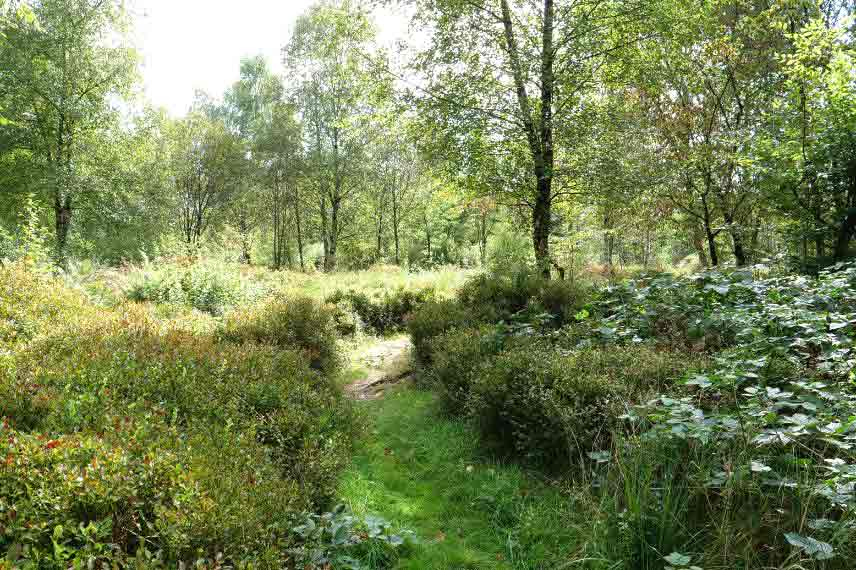
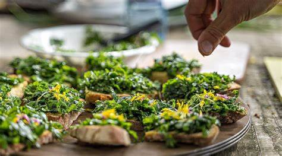
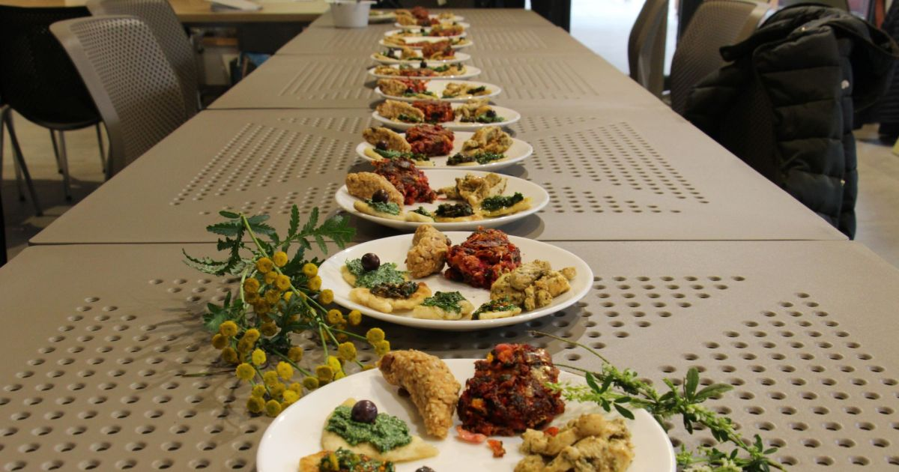

De la terre à l'assiette
C'est quoi une forêt jardin ?
Le jardin forêt, aussi appelée forêt comestible ou forêt nourricière, est un écosystème forestier où se mélangent arbres, plantes grimpantes, légumes annuels ou bisannuels, champignons, plantes aromatiques et médicinales, bois de chauffage.



Mais quoi sa sert ?
En résumé :
- Diversité et densité de végétaux élevés sur une petite surface.
- Le jardin-forêt demande moins d'efforts que l'agriculture conventionnelle.
- Il n'y a pas besoin de fertiliser, le sol de la forêt est suffisamment riche et il n'y a pas de carence en nutriments.
- Le jardin-forêt est plus beau et plus vivant que les champs de monoculture.
- Le sol ne s'épuise pas.


Et si on apprivoisait la cuisine sauvage ?
Et si on vous prouvait que la recette de soupe aux orties de votre grand-mère peut être délicieuse ? Il est grand temps de dépoussiérer la cuisine des plantes sauvages ! Ce savoir-faire ancestral, disparu un temps de nos cuisines, refait son apparition sur la table des plus grands chefs, et c'est une excellente nouvelle. Pour vous accompagner dans la (re)découverte de ces saveurs rares et originales, nous vous avons préparé une sélection de nos 5 recettes sauvages préférées.